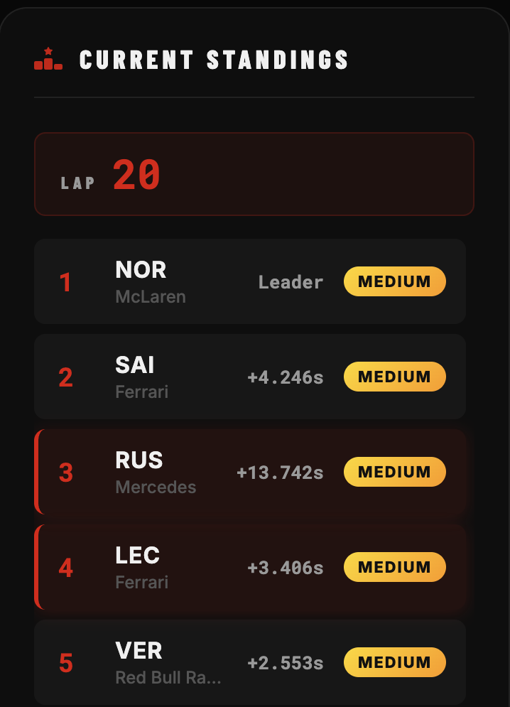
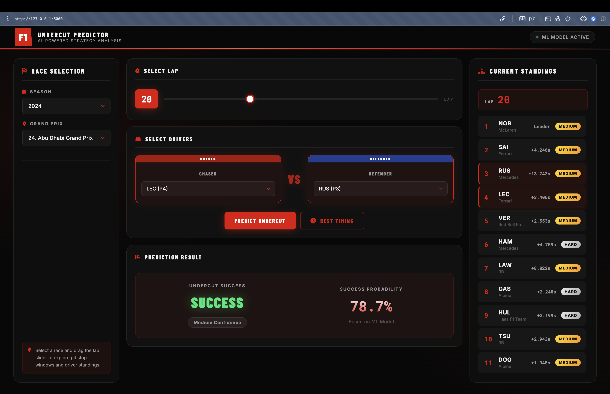
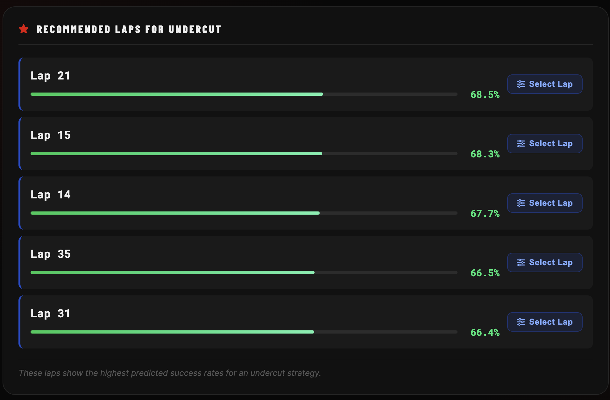

The Challenge
In Formula 1, the "undercut" is a split-second, highly complex strategic maneuver. The challenge was to democratize this elite race strategy analysis by building a machine learning web application capable of predicting the success probability of an undercut. This required processing raw telemetry data from the modern "Ground Effect" era (2022-2024 seasons) and engineering features that accurately capture the exact race state—and physics—at the moment of a pit decision.
The Solution
By hooking into the FastF1 API, I executed a digital race reconstruction. I engineered
seven core features including Gap_To_Ahead, Rival_Tyre_Age,
Pace_Delta, and an Is_Traffic binary variable to estimate track re-join risk
from aerodynamic turbulence. I strictly removed driver metadata during preprocessing to ensure the model
learned pure physics rather than driver biases.
For the Machine Learning architecture, I benchmarked six classification algorithms: Logistic Regression,
SVM, Gradient Boosting, KNN, Gaussian Naive Bayes, and Random Forest. Logistic
Regression was selected for deployment on a Flask backend, achieving an 83% F1-Score and
83% Precision, perfectly balancing the trade-off between strategic opportunity and costly false alarms.



FastF1 Engineering
Engineered 7 core telemetry features and handled missing stationary pit durations using a baseline imputation, standardizing inputs with StandardScaler.
Algorithm Evaluation
Benchmarked 6 models, proving Gaussian Naive Bayes unsuitable due to its feature independence assumptions failing on highly correlated F1 variables.
Flask ML Deployment
Deployed the winning Logistic Regression model seamlessly via a Flask web front-end, proving the physics-based linear nature of an undercut execution.
The Outcome
Completed as a comprehensive Data Mining project, the tool features a fully functional trained ML pipeline and web front-end that translates hundreds of thousands of racing parameters into immediate, predictive strategic insights.